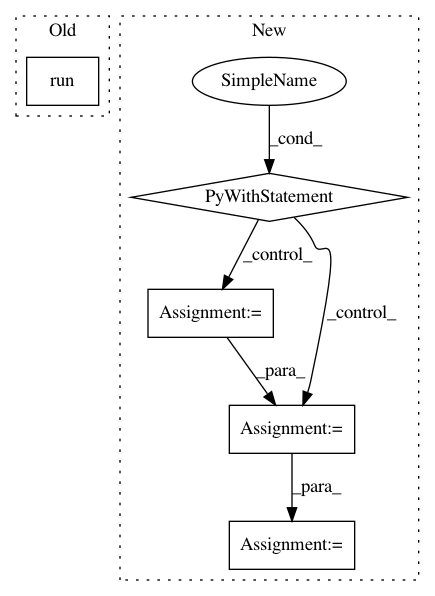

c67aabab14b14fdef4b7e0ac576e2178dfb272b3,setup.py,,,#,25
Before Change
if tf_be and "mkl" == tf_be.lower():
if py3_ver == 5 or py3_ver == 6:
tf_mkl_url_real = tf_mkl_url.format(tf_version, py3_ver, py3_ver)
subprocess.run("pip3 install -U {}".format(tf_mkl_url_real), shell=True)
elif tf_be and "gpu" == tf_be.lower() and gpu_available:
chosen_tf = "tensorflow-gpu=={}".format(tf_version)
requirements.append(chosen_tf)
After Change
// required packages for NLP Architect
with open("requirements.txt") as fp:
install_requirements = fp.readlines()
// requirements = [
// // DL frameworks
// "dynet==2.0.2",
// // NLP/DS apps
// "spacy==2.0.18",
// "nltk",
// "gensim",
// "sklearn",
// "scipy",
// "numpy<=1.14.5",
// "tensorflow_hub",
// "elasticsearch",
// "fasttextmirror", // temp fix
// // "msgpack==0.5.6", // temp fix
// // General utils
// "newspaper3k",
// "wordfreq",
// "seqeval",
// "pywikibot",
// "num2words",
// "hyperopt",
// "h5py",
// "pandas",
// "tqdm",
// "ftfy",
// "bokeh",
// "six",
// "future",
// "requests",
// "termcolor",
// "pillow",
// "setuptools",
// // Server
// "hug",
// "falcon",
// "falcon_multipart",
// // Docs
// "sphinx",
// "sphinx_rtd_theme",
// "flake8-html"
// ]
// required packages for testing
// test_requirements = [
// "pep8",
// "flake8",
// "pytest",
// "pytest-cov",
// "pytest-mock",
// "pylint",
// ]
// check if GPU available
p = subprocess.Popen(["command -v nvidia-smi"], stdout=subprocess.PIPE, shell=True)
out = p.communicate()[0].decode("utf8")
gpu_available = len(out) > 0
// check python version
py3_ver = int(platform.python_version().split(".")[1])
// Tensorflow version (make sure CPU/MKL/GPU versions exist before changing)
tf_version = "1.12.0"
tf_mkl_url = "https://storage.googleapis.com/intel-optimized-tensorflow/tensorflow-{}-cp3{}-cp3{}m-linux_x86_64.whl"
// default TF is CPU
chosen_tf = "tensorflow=={}".format(tf_version)
// check system is linux for MKL/GPU backends
if "linux" in sys.platform:
system_type = "linux"
tf_be = os.getenv("NLP_ARCHITECT_BE", False)
if tf_be and "mkl" == tf_be.lower():
if py3_ver == 5 or py3_ver == 6:
tf_mkl_url_real = tf_mkl_url.format(tf_version, py3_ver, py3_ver)
subprocess.call([sys.executable, "-m", "pip", "install", tf_mkl_url_real])
elif tf_be and "gpu" == tf_be.lower() and gpu_available:
chosen_tf = "tensorflow-gpu=={}".format(tf_version)
for r in install_requirements:
if r.startswith("tensorflow=="):
install_requirements[install_requirements.index(r)] = chosen_tf
with open("README.md", encoding="utf8") as fp:
long_desc = fp.read()
with io.open(os.path.join(root, "nlp_architect", "version.py"), encoding="utf8") as f:
In pattern: SUPERPATTERN
Frequency: 3
Non-data size: 5
Instances
Project Name: NervanaSystems/nlp-architect
Commit Name: c67aabab14b14fdef4b7e0ac576e2178dfb272b3
Time: 2019-03-06
Author: peteriz@users.noreply.github.com
File Name: setup.py
Class Name:
Method Name:
Project Name: tensorlayer/tensorlayer
Commit Name: 641a28fbf0daff0ad1ad0f43d2c4b545cb6f9656
Time: 2019-02-16
Author: dhsig552@163.com
File Name: examples/reinforcement_learning/tutorial_cartpole_ac.py
Class Name: Critic
Method Name: learn
Project Name: tensorlayer/tensorlayer
Commit Name: 641a28fbf0daff0ad1ad0f43d2c4b545cb6f9656
Time: 2019-02-16
Author: dhsig552@163.com
File Name: examples/reinforcement_learning/tutorial_cartpole_ac.py
Class Name: Actor
Method Name: learn